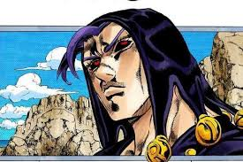

喬魯諾·喬巴拿(汐華初流乃)
替身名黃金體驗，人型的近距離力量型替身，本身的破壞力不高。能賦與被打的物品生命、使其變成地球上的動物或植物(卡茲是你)。若敵人攻擊其生物則會將攻擊（或能力產生的效果）反彈回去，若打到人類的身體，則會向對方灌注生命能量，使對方的意識暴衝數秒而無法控制自己的肉體，感覺也會因此被放大數倍而使受到的傷害的痛感加強，但這兩個設定在後期被遺忘。
布魯諾·布加拉提
替身名鋼鏈手指，能在任何東西上裝上拉鍊，進而接上或分離。打開別人身上的拉鍊能讓他的身體四分五裂，也可以把任何東西(包括自己)塞進別人的身體裡。鋼鏈手指的拉鍊能用來做短距離的快速移動，把拉鍊裝在地板上然後把拉鍊拉起來進行移動。戰鬥時會喊「阿哩阿哩阿哩……Arrivederci（再會了）！」
雷奧·阿帕基
替身名憂鬱藍調，可以將特定人物或替身的行動如同影片般的播放。雖然可以完美的再現對方的樣貌，但無法再現會瞬間移動的替身。可以用播放中的人物的樣子欺騙敵人，但弱點是會處於無法攻擊或防禦的無防備狀態。
在故事中多是擔任負責追蹤的角色，不是戰鬥型的替身
葛德·米斯達
四塊蛋糕要我選一個你是想殺了我啊!
替身名性感手槍，由六個小人組成的替身，每個負責一枚左輪手槍的子彈，可以騎在子彈上改變方向，或用踢擊迅速的改變軌道。每人都有自我意識。No.1是隊長、No.2是個吊兒郎當的傢伙、No.3很容易生氣、No.5是膽小的愛哭鬼、No.6冷酷且冷靜、No.7則是副隊長（在No.1不在時負責指揮）。其中當然沒有4號，因為4不吉利。
納蘭迦·吉爾各
替身名史密斯飛船，螺旋槳戰鬥機型的替身，能探測生物呼出的二氧化碳並加以攻擊。就算納蘭迦本人不在，只要是替身在的地方都可以用雷達探測。通常並不是用於攻擊而是偵查。子彈命中的話，能用子彈發出的硝煙追蹤敵人。
潘納科達·福葛

替身名紫煙，性格凶暴的人型替身，連本體也難以控制，能以拳頭上的膠囊釋放病毒，沒有抗體的生物會在感染病毒的30秒內全身腐敗而死，即使本體也無法倖免。病毒在陽光下數十秒就會被殺菌消毒。
特莉休·烏納
可以將任何物質變得柔軟，擁有自我意識的女性型替身。和特莉休接近對等的友人關係。平常雖然會用敬語，但戰鬥時則會顯露出不輸本體的強硬個性。
托比歐
老闆唯一信任心腹，替身能力是預知未來跟超強的力量
BOSS
組織的老闆沒人見過他的真面目
里蘇特·涅羅

替身名金屬製品，用磁力操作鐵份的群體型替身。非常的小、是存在於本體體內的稀有類型。能用磁力把敵方血液中的鐵份化為刀片、剪刀等鐵製品，在對方體內進行攻擊。受到攻擊的目標體內會大量出血，會因體內鐵分的減少而造成缺氧、變成無法行動的狀態。也能操作砂中的鐵份覆蓋在體表，形成類似保護色的作用容於周遭的風景中。是兼具攻擊性和隱密性，適合暗殺的替身。被切斷的身體部位，可以利用血液中的鐵份來接起。
波爾馬吉歐

替身名小腳，可以將被自己食指的刀劃傷的對象不斷縮小。一旦被施加能力的對象不管逃到哪裡，都會無限的被縮小。能力解除的話會瞬間恢復到原本的大小。另外，可以自由地將自己瞬間縮小。
伊魯索

替身名鏡中人，戴著風鏡的人型替身。可以做出「鏡中世界」，以鏡子為出入口進出其中。在鏡中世界移動到別的地方再出來也是可以辦到的。通常看著鏡子並不會看到伊魯索的身影，所以無法追蹤。讓目標看見鏡中的伊魯索，「看見伊魯索的身影」、「使其映在鏡子中」滿足這兩個條件便可以將其拉入鏡中世界。在鏡中世界除了伊魯索外的人不能移動物品。鏡外世界如果有什麼變化，鏡中世界也會連動發生變化。只有伊魯索「許可」的對象才可以進入鏡中世界。對有替身能力的人，一般只會許可本體進入，所以沒得到許可的替身將會留在鏡外。
普羅修特

替身名壯烈成仁，全身布滿眼睛，接近人型但沒有下肢，用像腳一樣粗的兩隻手臂行走的替身。會釋放將周遭的生物無差別老化的氣體。對體溫較低的對象老化速度會變慢。直接碰觸對象則可瞬間將其老化。本體可以自由的解除老化。因為老化能力不分敵我，所以同伴也必須用冰保持體溫低下。
貝西
替身名海灘男孩，釣竿狀的替身。釣線和釣針能像通過水一樣通過除了目標外的物體，能入侵目標體內從內部撕裂目標的身體。一旦刺入目標體內，就能利用釣竿的彈性奪取目標的體力。因為連結了目標的神經，一旦對釣竿進行攻擊，能量便會隨著釣線反彈到對方身上。可以從刺入的部分得知目標的身體狀況。
梅洛尼

替身名娃娃臉，由從個人電腦長出手腳形成的控制器以及採取目標的血液分析遺傳因子後，以女性為媒介出生的「兒子」兩體構成的實體化替身。能力是把目標切割成許多碎塊，並重新組合成不同形狀。
加丘
替身名白色相簿，使周圍環境急速冷卻至超低溫，並將本體包覆在冰製外殼下。透過逼近絕對零度的溫度使物體停止運動，自己移動時會運用腳下的冰滑行，外型似太空服、有貓耳。
索爾貝與傑拉德
意圖查出組織「老闆」的真正身份而被老闆殺了